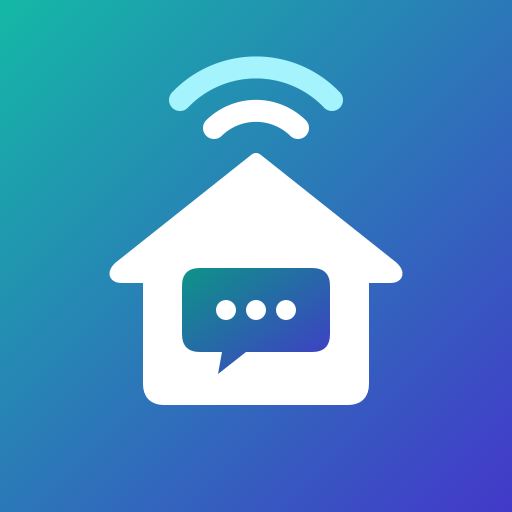

Privacy Policy
Effective: November 19, 2026
HomePiRelay is a personal application used only by its owner on their own home devices. This policy explains what data it accesses and what it does with it.
Data accessed
When the owner signs in with Google and grants permission, HomePiRelay accesses, through the Google Smart Device Management API and Google Cloud Pub/Sub:
- the list and names of the owner's Nest cameras;
- live video and audio streams from those cameras, when the owner views them;
- camera events (such as motion and person detection) and their snapshot images.
How data is used
- To show the owner's camera streams on the owner's own home network.
- To send the owner notifications about camera events, including snapshots, to the owner's own private chat.
Data is not used for advertising, profiling, or any purpose other than providing these features to the owner.
Storage
Access tokens and any saved snapshots are stored only on the owner's own Raspberry Pi at home. HomePiRelay has no servers of its own and keeps no copies elsewhere. Snapshots may be deleted at any time by the owner.
Sharing
HomePiRelay does not sell, rent, or share Google user data with anyone. Data is transmitted only between Google's services, the owner's device, and the owner's own messaging account.
Google API Services User Data Policy
HomePiRelay's use and transfer of information received from Google APIs adheres to the Google API Services User Data Policy, including the Limited Use requirements.
Revoking access
Access can be revoked at any time from your Google Account permissions or the Nest partner connections page. Revoking access stops all data collection immediately.
Contact
Questions about this policy can be sent to the support email shown on the app's Google sign-in consent screen.